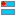

Znaczniki (potocznie tagi, od ang. tags)
umożliwiają oznaczanie pozycji,
rozciągłości w czasie i odprowadzeń, w których oznaczać można występowanie
zdarzeń, związanych z zapisem EEG, na przykład:
-
momenty wystąpienia bodźców, potrzebne do uśredniania potencjałów wywołanych,
-
występującew sygnale struktury (grafoelementy), jak np. wrzeciona snu czy artefakty,
-
stadia snu.
Każdy z powyższych przykładów wymaga innego rodzaju znaczników:
-
Oznaczenia synchronizowanych z sygnałem bodźców tworzone są zwykle automatycznie w czasie rejestracji EEG w eksperymencie,
dzięki synchronizacji czasu między systemem generującym bodźce (komputer wyświetlający lub kontrolujący bodźce wzrokowe
lub słuchowe czy czuciowe) a systemem rejestracji. Szczegóły tego procesu zależą od systemu, w którym
projektowano i implementowano dany eksperyment.
-
Oznaczanie w sygnale struktur (zwanych czasem grafoelementami) odbywa się zwykle a posteriori,
na uprzednio zarejestrowanym sygnale. Artefakty oznaczamy zwykle w celu wykluczenia oznaczonych odcinków z dalszych analiz,
więc powinny to być oznaczenia niezwiązane z konkretnym kanałem. Z kolei wybrane grafoelementy (wrzeciona snu, fale wolne itp.)
możemy oznaczać w konkretnych odprowadzeniach. Wszystkie te oznaczenia mogą być generowane automatycznie z użyciem wybranych
metod analizy sygnałów (jak np. zaimplementowane w Svarogu oznaczanie struktur wybranych z dekompozycji MP), lub ręcznie/wzrokowo
(np. przez doświadczonego elektroencefalografistę, w celu porówania z detekcją automatyczną).
-
Stadia snu zdefiniowano (względnie) ściśle po raz pierwszy w roku 1968
(A Manual of Standardized Terminology, Techniques and Scoring System for Sleep Stages of Human Subjects:
Allan Rechtschaffen and Anthony Kales, Editors).
Uaktualnione wersje standardu publikowane są przez American Academy of Sleep Medicine w The AASM Manual for the Scoring of Sleep
and Associated Events. Jak widać z tytułu, poza samymi stadiami oznaczać można również wybrane grafoelementy, których obecność wchodzi w skład
kryteriów określających wystąpienia danego stadium. Svarog oferuje predefiniowane schematy oznaczeń wedle obydwu w/w standardów.
Svarog udostępnia możliwość samodzielnego tworzenia i modyfikowania definicji znaczników, jak również korzystania z predefiniowanych stylów.
Styl określa typ znacznika:
 tag stronicowy,
tag stronicowy,- czyli przypisujący oznaczenie (na przykład stadium snu) jednej składce sygnału, o długości zwykle 20 lub 30 sekund (definowanej we własnościach pliku,
można ją zmienić w oknie wczytywania pliku lub w zakładce "Tagi" okna "Preferencje" z menu "Narzędzia"),
-
 tag blokowy,
tag blokowy,
- czyli przypisujący oznaczenie jednego bloku sygnału (podobnie jak dla składki, definiowaneg definowanej we własnościach pliku);
ten znacznik był wykorzystywany do oznacznia artefaktów w sztywnych blokach, i zachowany jest dla kompatybilności z wykonywanymi wcześniej oznaczeniami;
liczbę bloków na składkę określamy jak w przypadku długości składki powyżej,
 tag kanałowy,
tag kanałowy,- czyli przypisany do jednego lub wszystkich
odprowadzeń, oznaczający początek i koniec wystapienia zdarzenia lub struktury,
jak również konkretne odprowadzenie, w którym strukturę oznaczano
(może być też przypisany do wszystkich kanałów).
Svarog zapisuje również montaż, w którym wykonywano dane oznaczenia,
gdyż mogą się one odnosić np. do specyficznych odprowadzeń bipolarnych.
Menu
- Nowy tag
- Pozwala stworzyć własne definicje oznaczeń, wybrać spośród predefiniowanych stylów wbudowanych w program,
lub wczytać wcześniej zapisane style z pliku.
 Otwórz tag
Otwórz tag Zapisz znaczniki (tag)
Zapisz znaczniki (tag) Zapisz tag jako ...
Zapisz tag jako ... Zamknij tag
Zamknij tag
- Import
- CZY TO JEST REDUNDANTNE I TA POZYCJA POWINNA ZOSTAĆ USUNIĘTA Z MENU?
- Eksport
- Pozwala zapisać tag w formacie czytelnym dla pakietu EEGLab.
-  Wybierz aktywny tag
 Edytuj opis tagu
Edytuj opis tagu Style znaczników
Style znaczników- Styl definiuje m.in. kolor każdego ze znaczników, używany do wizualizacji,
krótki opis, oraz przypisany skrót klawiszowy, ułatwiający ręczne oznaczanie.
- Edytuj szablony stylów tagów
 Porównaj tagi
Porównaj tagi- Otwiera okno pozwalające na wykonanie porównania statystycznego dwóch wczytanych wcześniej plików ze znacznikami.
Ponadto, jeśli otworzymy dodatkowe okno z tym zamym sygnałem, klikając biały plusik w zielonym kółku
 w lewym górnym rogu okna z sygnałem, możemy porównywać dwa różne oznaczenia na tle synchronicznie
wyświetlanych w dwóch oknach tych samych sygnałów z różnymi oznaczeniami.
Guzik
w lewym górnym rogu okna z sygnałem, możemy porównywać dwa różne oznaczenia na tle synchronicznie
wyświetlanych w dwóch oknach tych samych sygnałów z różnymi oznaczeniami.
Guzik  w drugim (podrzędnym) oknie
kontroluje ustawienia synchchronizacji między oknami, montaże itp.
Ponadto, kliknięcie prawym guzikiem myszy na oknie wyświetlanego hipnogramu umożliwia
synchronicznie wyświetlenie hipnogramów z więcej niż jednego tagu.
w drugim (podrzędnym) oknie
kontroluje ustawienia synchchronizacji między oknami, montaże itp.
Ponadto, kliknięcie prawym guzikiem myszy na oknie wyświetlanego hipnogramu umożliwia
synchronicznie wyświetlenie hipnogramów z więcej niż jednego tagu.
- Synchronizuj tagi z wyzwalaczem (triggerem)
- Pozwala na automatyczne tworzenie znaczników na podstawie odprowadzenia,
w którym zapisano (razem z EEG) sygnał związany z bodźcem.
Jako moment wystąpienia bodźca możemy określić (zależnie od warunków eksperymentu) na przykład odpowiednie narastanie tego sygnału.
Wtedy w odpowiednich miejscach Svarog wstawi znaczniki,
na podstawie których będziemy mogli na przykład uśredniać potencjały wywołane tym bodźcem.
Technikalia
Znaczniki zapisywane są w plikach *.tag w formacie xml.
Plik zawierający znaczniki powinien być jednoznacznie powiązany jest z plikiem
zawierającym opisywany sygnał (przez nazwę pliku),
ale do jednego sygnału może być przypisanych wiele plików z oznaczeniami.
Pierwotna idea znaczników w SignalML opisana jest w dokumencie
https://braintech.pl/software/svarog/signalml-annotations/,
ale nie wszystkie możliwości są zaimplementowane w Svarogu. Zrezygnowaliśmyh na przykład
z zapisu sumy kontrolnej, która ulegałaby zmianie po zapisie przefiltrowanego sygnału —
tag stawałby się niezgodny z nowym plikiem, zawierającym przefiltrowany sygnał EEG.